CH¦¥NG V
5.1. Bµi to¸n x¸c nhËn vµ s¬ ®å ch÷ ký.
5.1.1. §Æt vÊn ®Ò.
Trong ch¬ng I, tiÕt 1.3, ta ®· liÖt kª mét sè bµi to¸n chñ yÕu vÒ an toµn th«ng tin, trong ®ã ngoµi bµi to¸n quan träng nhÊt lµ b¶o mËt th«ng tin th× c¸c bµi to¸n kÕ tiÕp lµ: x¸c nhËn th«ng b¸o vµ x¸c nhËn ngêi göi (cïng víi th«ng b¸o), xng danh vµ x¸c nhËn danh tÝnh cña mét chñ thÓ giao dÞch, v.v... Bµi to¸n b¶o mËt ®îc ®¸p øng b»ng c¸c gi¶i ph¸p mËt m· ®· lµ néi dung cña c¸c ch¬ng III vµ IV, trong ch¬ng nµy vµ ch¬ng sau ta sÏ ®Ò cËp ®Õn c¸c bµi to¸n x¸c nhËn vµ nhËn thøc kÓ trªn, ch¬ng V nµy sÏ dµnh cho bµi to¸n x¸c nhËn th«ng b¸o vµ ngêi göi th«ng b¸o, ch¬ng VI tiÕp theo sÏ xÐt bµi to¸n xng danh vµ x¸c nhËn danh tÝnh.
Trong c¸ch thøc truyÒn thèng, th«ng b¸o ®îc truyÒn ®i trong giao dÞch thêng díi d¹ng c¸c v¨n b¶n viÕt tay hoÆc ®¸nh m¸y ®îc kÌm thªm ch÷ ký (viÕt tay) cña ngêi göi ë bªn díi v¨n b¶n. Ch÷ ký ®ã lµ b»ng chøng x¸c nhËn th«ng b¸o ®óng lµ cña ngêi ký, tøc lµ cña chñ thÓ giao dÞch, vµ nÕu tê giÊy mang v¨n b¶n kh«ng bÞ c¾t, d¸n, tÈy, xo¸, th× tÝnh toµn vÑn cña th«ng b¸o còng ®îc chøng thùc bëi ch÷ ký ®ã. Ch÷ ký viÕt tay cã nhiÒu u ®iÓm quen thuéc nh dÔ kiÓm thö, kh«ng sao chÐp ®îc, ch÷ ký cña mét ngêi lµ gièng nhau trªn nhiÒu v¨n b¶n, nhng mçi ch÷ ký g¾n liÒn víi mét v¨n b¶n cô thÓ, v.v...
Khi chuyÓn sang c¸ch thøc truyÒn tin b»ng ph¬ng tiÖn hiÖn ®¹i, c¸c th«ng b¸o ®îc truyÒn ®i trªn c¸c m¹ng truyÒn tin sè ho¸, b¶n th©n c¸c th«ng b¸o còng ®îc biÓu diÔn díi d¹ng sè ho¸, tøc díi d¹ng c¸c d·y bit nhÞ ph©n, “ch÷ ký” nÕu cã còng ë díi d¹ng c¸c d·y bit, th× c¸c mèi quan hÖ tù nhiªn kÓ trªn kh«ng cßn gi÷ ®îc n÷a. Ch¼ng h¹n, “ch÷ ký” cña mét ngêi göi trªn nh÷ng v¨n b¶n kh¸c nhau ph¶i thÓ hiÖn ®îc sù g¾n kÕt tr¸ch nhiÖm cña ngêi göi ®èi víi tõng v¨n b¶n ®ã th× tÊt yÕu ph¶i kh¸c nhau chø kh«ng thÓ lµ nh÷ng ®o¹n bit gièng nhau nh c¸c ch÷ ký gièng nhau trªn c¸c v¨n b¶n th«ng thêng. Ch÷ ký viÕt tay cã thÓ ®îc kiÓm thö b»ng c¸ch so s¸nh víi nguyªn mÉu, nhng “ch÷ ký” ®iÖn tö th× kh«ng thÓ cã “nguyªn mÉu” ®Ó mµ so s¸nh, viÖc kiÓm thö ph¶i ®îc thùc hiÖn b»ng nh÷ng thuËt to¸n ®Æc biÖt. Mét vÊn ®Ò n÷a lµ viÖc sao chÐp mét v¨n b¶n cïng ch÷ ký. NÕu lµ v¨n b¶n cïng ch÷ ký viÕt tay th× dÔ ph©n biÖt b¶n gèc víi b¶n sao, do ®ã khã mµ dïng l¹i ®îc mét v¨n b¶n cã ch÷ ký thËt. Cßn víi v¨n b¶n ®iÖn tö cïng ch÷ ký ®iÖn tö th× cã thÓ nh©n b¶n sao chÐp tuú thÝch, khã mµ ph©n biÖt ®îc b¶n gèc víi b¶n sao, cho nªn nguy c¬ dïng l¹i nhiÒu lÇn lµ cã thùc, do ®ã cÇn cã nh÷ng biÖn ph¸p ®Ó tr¸nh nguy c¬ ®ã.
Mét “ch÷ ký”, nÕu muèn thÓ hiÖn ®îc tr¸ch nhiÖm cña ngêi göi trªn toµn v¨n b¶n, th× ph¶i mang ®îc mét chót g¾n bã nµo ®ã víi tõng bit th«ng tin cña v¨n b¶n, v× vËy, theo h×nh dung ban ®Çu, ®é dµi cña ch÷ ký còng ph¶i dµi theo ®é dµi cña v¨n b¶n; ®Ó cã ®îc “ch÷ ký ng¾n” nh trong trêng hîp viÕt tay ngêi ta ph¶i dïng mét kü thuËt riªng gäi lµ hµm b¨m mµ ta sÏ tr×nh bµy ë cuèi ch¬ng. B©y giê, tríc hÕt ta sÏ giíi thiÖu ®Þnh nghÜa vÒ s¬ ®å ch÷ ký (®iÖn tö).
5.1.2. §Þnh nghÜa s¬ ®å ch÷ ký.
§Þnh nghÜa 5.1. Mét s¬ ®å ch÷ ký S lµ mét bé n¨m
S = (, , , , ),
trong ®ã: lµ mét tËp h÷u h¹n c¸c th«ng b¸o cã thÓ cã,
lµ mét tËp h÷u h¹n c¸c ch÷ ký cã thÓ cã,
lµ mét tËp h÷u h¹n c¸c kho¸, mçi kho¸ K gåm cã hai phÇn K =(K’,K''), K' lµ kho¸ bÝ mËt dµnh cho viÖc ký, cßn K'' lµ kho¸ c«ng khai dµnh cho viÖc kiÓm thö ch÷ ký.
Víi
mçi K
=(K’,K''),
trong
cã mét
thuËt to¸n ký
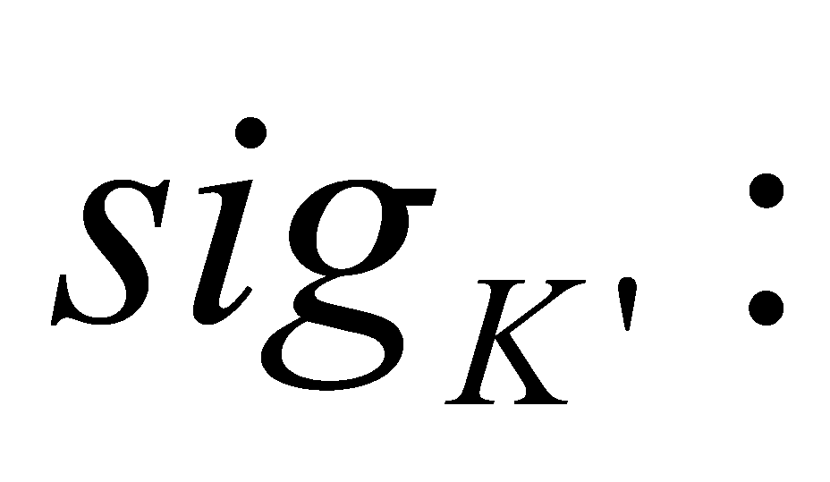 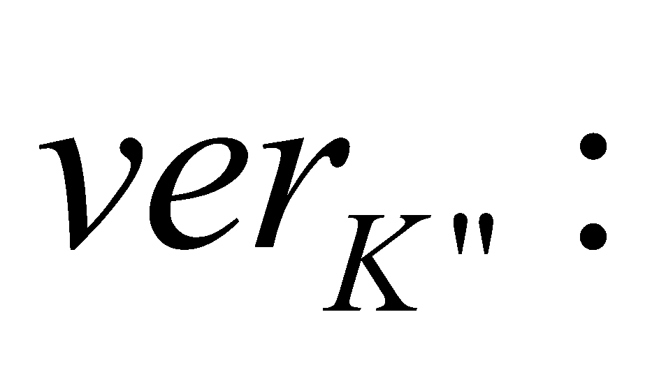
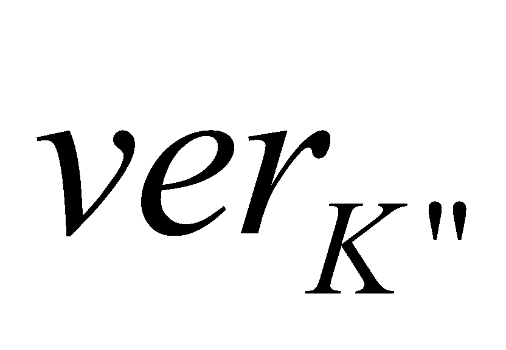 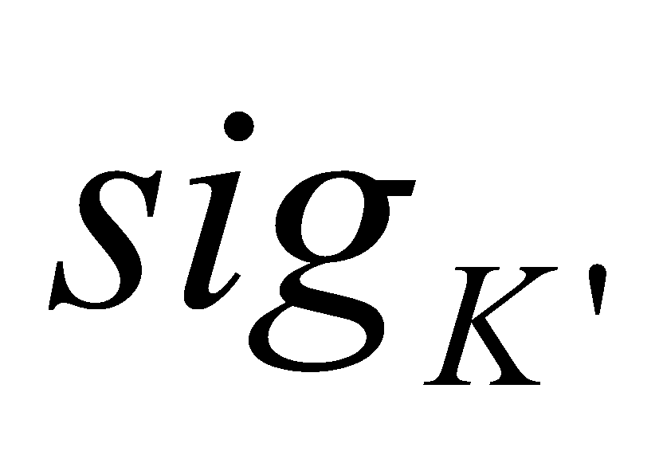
Víi s¬ ®å trªn, mçi chñ thÓ së h÷u mét bé kho¸ K =(K’,K''), c«ng bè c«ng khai kho¸ K'' ®Ó mäi ngêi cã thÓ kiÓm thö ch÷ ký cña m×nh, vµ gi÷ bÝ mËt kho¸ K’ ®Ó thùc hiÖn ch÷ ký trªn c¸c th«ng b¸o mµ m×nh muèn göi ®i. C¸c hµm vµ (khi biÕt K’ ) ph¶i tÝnh ®îc mét c¸ch dÔ dµng (trong thêi gian ®a thøc), tuy nhiªn hµm
y = (x ) lµ khã tÝnh ®îc nÕu kh«ng biÕt K’ - ®iÒu ®ã b¶o ®¶m bÝ mËt cho viÖc ký, còng tøc lµ b¶o ®¶m chèng gi¶ m¹o ch÷ ký.
Bµi to¸n x¸c nhËn víi ch÷ ký ®iÖn tö, theo mét nghÜa nµo ®ã, cã thÓ xem lµ « ®èi ngÉu » víi bµi to¸n b¶o mËt b»ng mËt m·, nh ®îc minh ho¹ bëi thÝ dô s¬ ®å ch÷ ký RSA, ®èi ngÉu víi s¬ ®å mËt m· RSA, díi ®©y :

5.1.3. S¬ ®å ch÷ ký RSA.
S¬ ®å ch÷ ký RSA ®îc cho bëi bé n¨m
S = (, , , , ),
trong
®ã
=
=Zn
, víi n
=p.q
lµ tÝch cña hai sè nguyªn tè lín p,q,
lµ tËp c¸c cÆp kho¸ K
=(K’,K''),
víi K’
= a vµ K''
= (n,b), a vµ
b lµ hai sè
thuéc
 tho¶ m·n a.b
1(mod(n)). C¸c
hµm
vµ
®îc
x¸c ®Þnh nh sau:
tho¶ m·n a.b
1(mod(n)). C¸c
hµm
vµ
®îc
x¸c ®Þnh nh sau:
(x) = x a modn ,
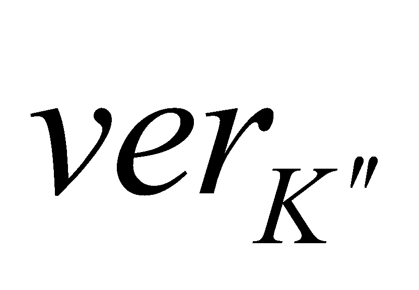
DÔ chøng minh ®îc r»ng s¬ ®å ®îc ®Þnh nghÜa nh vËy lµ hîp thøc, tøc lµ víi mäi x vµ mäi ch÷ ký y:
(x, y) = ®óng y = (x ).
Chó
ý r»ng tuy hai vÊn ®Ò x¸c nhËn vµ b¶o mËt theo s¬ ®å RSA
lµ cã bÒ ngoµi gièng nhau, nhng néi dung cña chóng lµ
hoµn toµn kh¸c nhau: Khi A göi th«ng b¸o x
cho
B, ®Ó B cã c¨n cø x¸c nhËn ®ã ®óng thùc lµ th«ng b¸o
do A göi, A ph¶i göi kÌm theo ch÷ ký
(x),
tøc lµ A göi cho B (x,
(x)),
trong c¸c th«ng tin göi ®i ®ã, th«ng b¸o x
hoµn toµn kh«ng ®îc gi÷ bÝ mËt. Còng t¬ng tù nh
vËy, nÕu dïng s¬ ®å mËt m· RSA, khi mét chñ thÓ A nhËn
®îc mét b¶n mËt m·
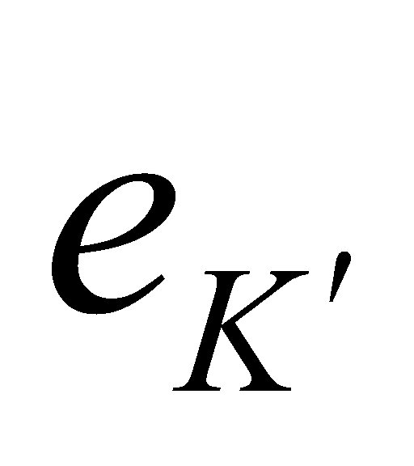
NÕu
ta muèn hÖ truyÒn tin cña ta võa cã tÝnh b¶o mËt võa cã
tÝnh x¸c nhËn, th×
ta ph¶i sö dông ®ång thêi c¶ hai hÖ mËt m· vµ x¸c nhËn
(b»ng ch÷ ký). Gi¶ sö trªn m¹ng truyÒn tin c«ng céng, ta cã
c¶ hai hÖ mËt m· kho¸ c«ng khai S1
vµ
hÖ
x¸c
nhËn b»ng ch÷ ký S
2.
Gi¶ sö B cã bé kho¸ mËt m· K
= (K',
K'') víi
K'
= (n, e)
vµ
K''
= d trong
hÖ S1,
vµ A cã bé kho¸
ch÷
ký
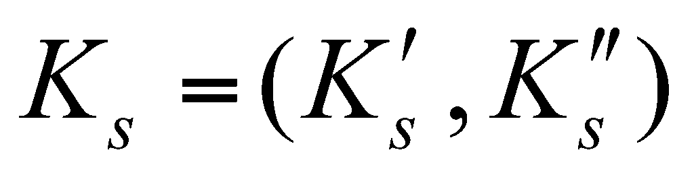 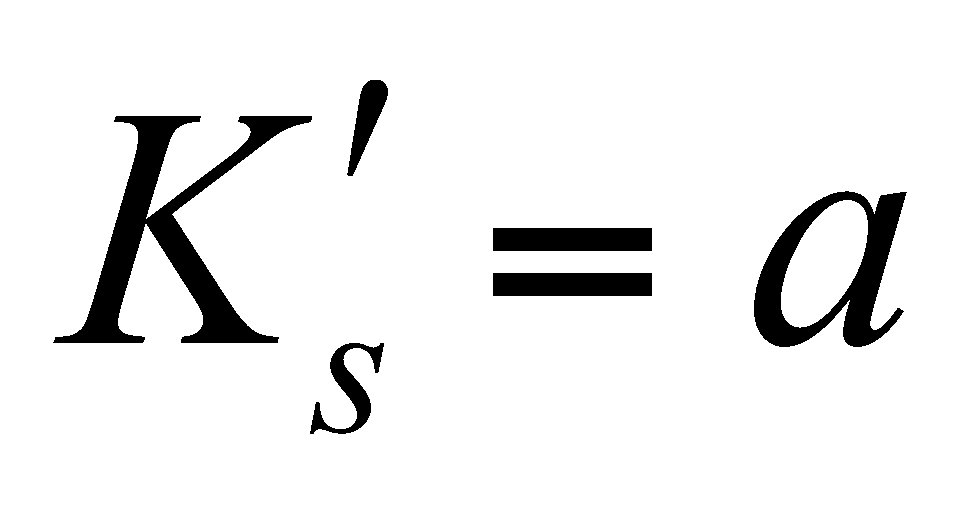 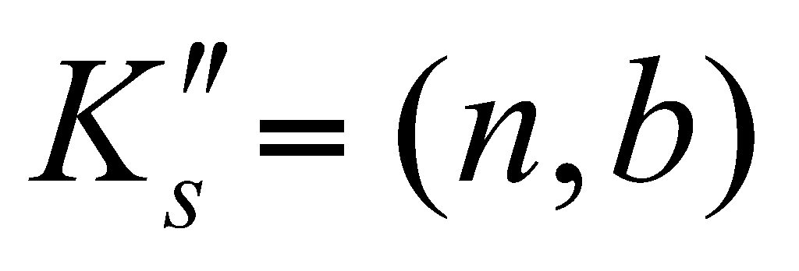 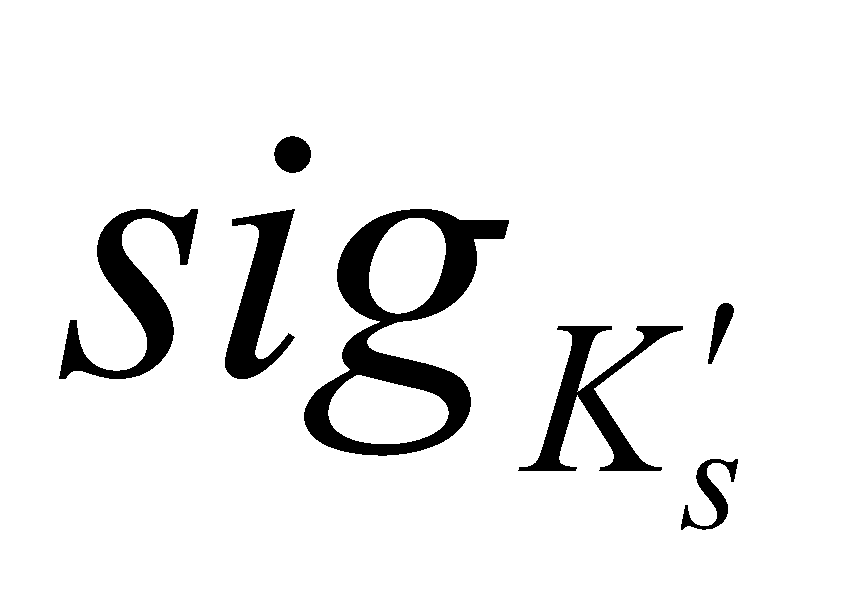 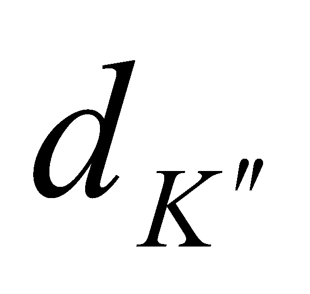 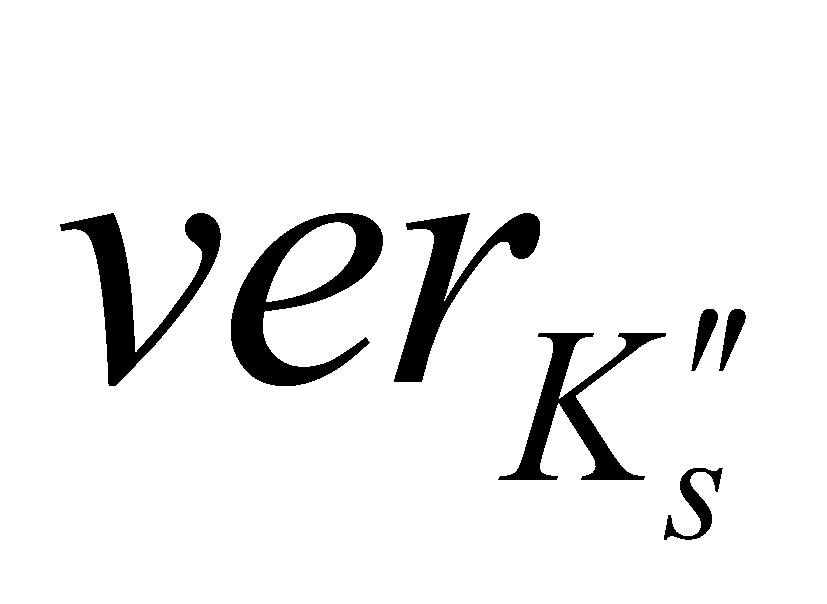
5.2. S¬ ®å ch÷ ký ElGamal vµ chuÈn ch÷ ký ®iÖn tö.
5.2.1. S¬ ®å ch÷ ký ElGamal.
S¬ ®å ch÷ ký ElGamal ®îc ®Ò xuÊt n¨m 1985, gÇn nh ®ång thêi víi s¬ ®å hÖ mËt m· ElGamal, còng dùa trªn ®é khã cña bµi to¸n l«garit rêi r¹c. S¬ ®å ®îc thiÕt kÕ ®Æc biÖt cho môc ®Ých ký trªn c¸c v¨n b¶n ®iÖn tö, ®îc m« t¶ nh mét hÖ
S = (, , , , ),
trong
®ã
= 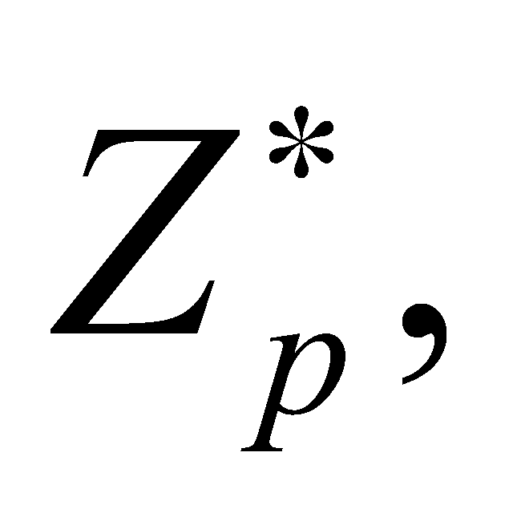 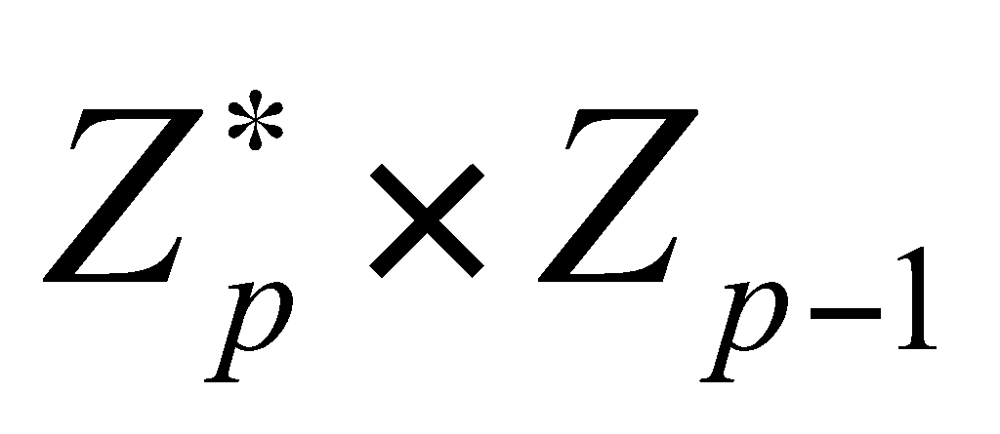 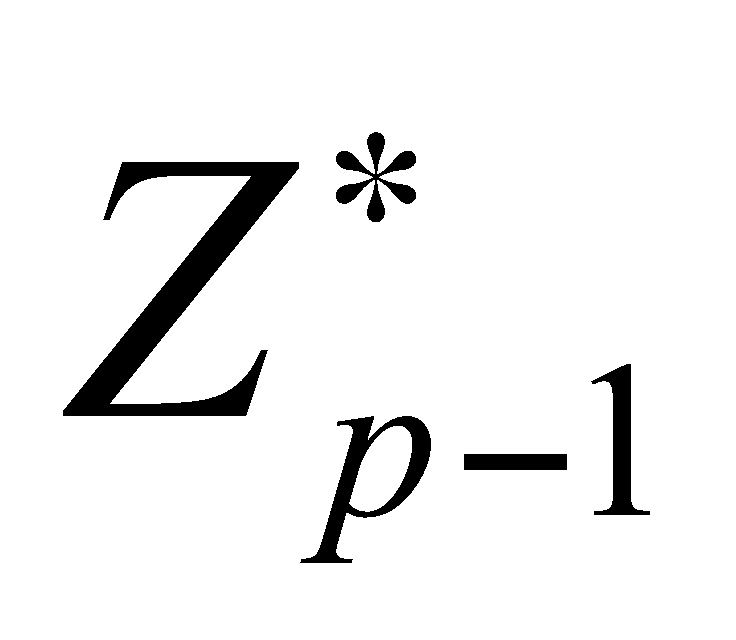 lµ
rÊt khã. TËp hîp
gåm c¸c cÆp kho¸ K
=(K’,K''),
víi K’
= a lµ mét sè
thuéc
lµ
rÊt khã. TËp hîp
gåm c¸c cÆp kho¸ K
=(K’,K''),
víi K’
= a lµ mét sè
thuéc
 ,
K''
=(p,
,
),
lµ mét phÇn tö nguyªn thuû cña
,
K''
=(p,
,
),
lµ mét phÇn tö nguyªn thuû cña
 ,
vµ
=
a
modp. K’
lµ kho¸ bÝ mËt dïng ®Ó
ký, vµ K''
lµ kho¸ c«ng khai dïng ®Ó kiÓm thö ch÷ ký. C¸c thuËt to¸n
ký vµ kiÓm thö ch÷ ký ®îc x¸c ®Þnh nh sau: Víi
mçi th«ng b¸o x,
®Ó t¹o ch÷ ký trªn x
ta chän thªm m«t sè ngÉu nhiªn k
,
vµ
=
a
modp. K’
lµ kho¸ bÝ mËt dïng ®Ó
ký, vµ K''
lµ kho¸ c«ng khai dïng ®Ó kiÓm thö ch÷ ký. C¸c thuËt to¸n
ký vµ kiÓm thö ch÷ ký ®îc x¸c ®Þnh nh sau: Víi
mçi th«ng b¸o x,
®Ó t¹o ch÷ ký trªn x
ta chän thªm m«t sè ngÉu nhiªn k
(x,k
) =
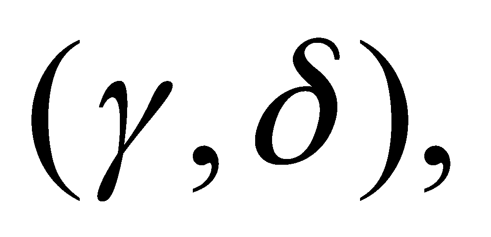
 modp,
modp,
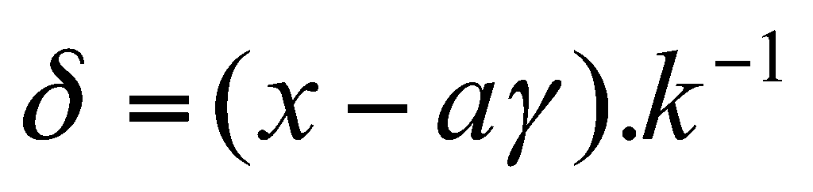
ThuËt to¸n kiÓm thö ®îc ®Þnh nghÜa bëi:
(x, 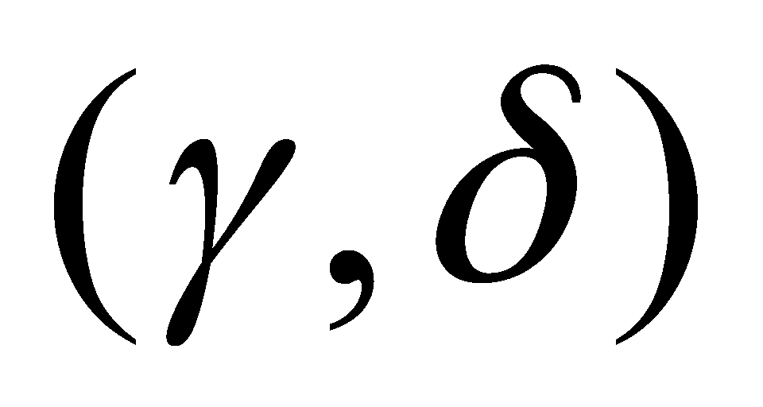
DÔ thÊy r»ng s¬ ®å ch÷ ký ®îc ®Þnh nghÜa nh trªn lµ hîp thøc. Thùc vËy, nÕu (x,k ) = th× ta cã :
. a.k modp
x modp,
v× k +a x mod(p -1). Do ®ã, (x, ) = ®óng.
ThÝ
dô: Gi¶ sö p
= 467,
= 2, a
= 127. Khi
®ã
= 2127mod467=132.
Cho x
=100; ta chän ngÉu nhiªn k
=213 ( 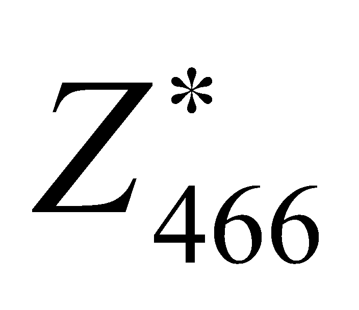
§Ó kiÓm thö ta tÝnh :
. = 13229.2951 189 (mod467),
x = 2100 189 (mod467),
hai gi¸ trÞ ®ã ®ång d víi nhau theo mod467, ch÷ ký(, )=(29,51) ®îc x¸c nhËn lµ ®óng.
5.2.2. TÝnh an toµn cña s¬ ®å ch÷ ký ElGamal.
S¬ ®å ch÷ ký ElGamal ®îc xem lµ an toµn, nÕu viÖc ký trªn mét v¨n b¶n lµ kh«ng thÓ gi¶ m¹o ®îc, nãi c¸ch kh¸c, kh«ng thÓ cã mét ngêi nµo ngoµi chñ thÓ hîp ph¸p cã thÓ gi¶ m¹o ch÷ ký cña chñ thÓ hîp ph¸p ®ã trªn mét v¨n b¶n bÊt kú. V× vËy, viÖc gi÷ bÝ mËt kho¸
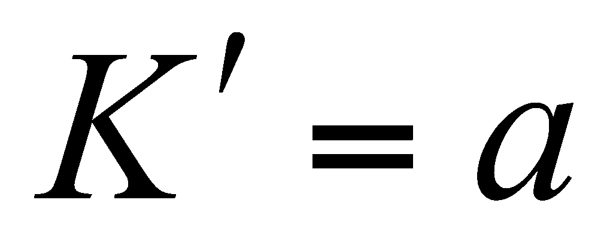
dïng ®Ó t¹o ch÷ ký lµ cã ý nghÜa quyÕt ®Þnh ®èi víi viÖc b¶o ®¶m tÝnh an toµn cña ch÷ ký. Cã thÓ ®Ó lé kho¸ bÝ mËt trong nh÷ng trêng hîp nµo, vµ cã thÓ kh«ng ®Ó lé mµ vÉn gi¶ m¹o ch÷ ký ®îc kh«ng? Ta sÏ xÐt sau ®©y mét vµi trêng hîp ®¬n gi¶n :1) Kh¶ n¨ng ®Ó lé kho¸ : Còng nh ®èi víi s¬ ®å hÖ mËt m· ElGamal, kho¸ bÝ mËt a cã thÓ bÞ ph¸t hiÖn trong trêng hîp ®Ó lé sè ngÉu nhiªn k ë mét lÇn ký nµo ®ã, hoÆc sö dông cïng mét sè ngÉu nhiªn k ë hai lÇn ký kh¸c nhau.
NÕu sè ngÉu nhiªn k ®îc sö dông khi ký trªn v¨n b¶n x bÞ lé, th× kho¸ bÝ mËt ®îc tÝnh theo c«ng thøc sau ®©y:
a = (x - k ). -1 mod(p –1).
B©y giê ta xÐt trêng hîp dïng cïng mét sè ngÉu nhiªn k cho hai lÇn ký kh¸c nhau, ch¼ng h¹n cho x1 vµ x2. Khi ®ã ta cã ch÷ ký trªn x1 lµ ( , 1), trªn x2 lµ ( , 2), víi thµnh phÇn thø nhÊt b»ng nhau (vµ b»ng = k modp), vµ c¸c ch÷ ký ®ã tho¶ m·n
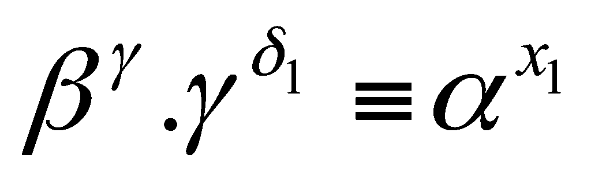
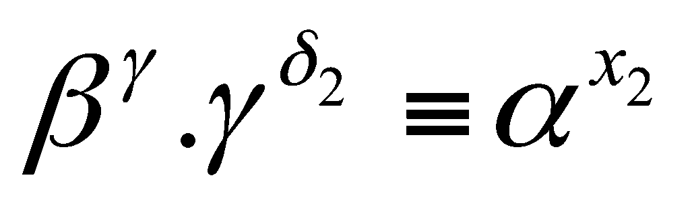
Tõ ®ã ta cã
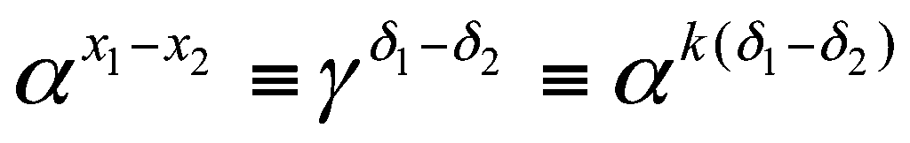
®iÒu ®ã t¬ng ®¬ng víi
x 1 - x2 k (1 - 2) (mod(p -1)).
§Æt d = gcd(1 - 2, p -1). C¶ ba sè 1 - 2, p -1 vµ x 1 - x2 ®Òu chia hÕt cho d, ta ®Æt
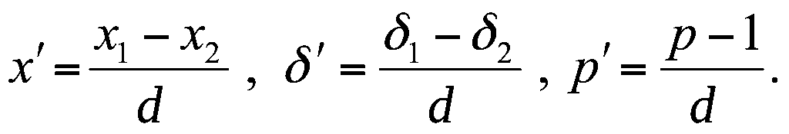
Khi ®ã ®ång d thøc ë trªn trë thµnh
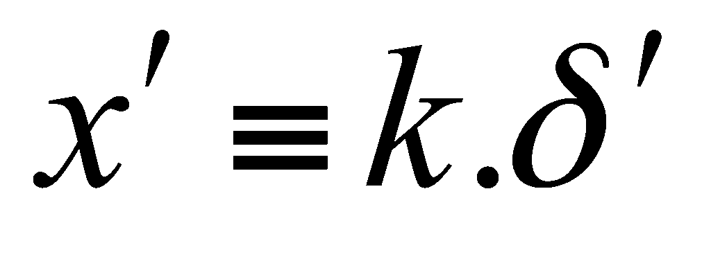 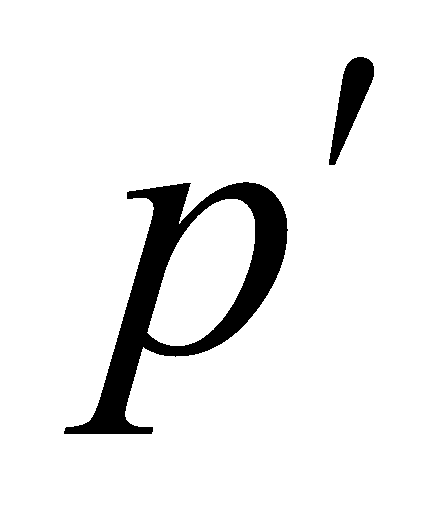
V×
gcd 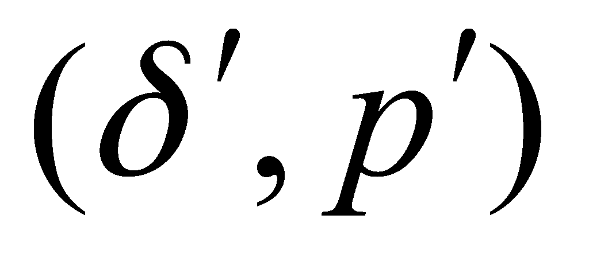 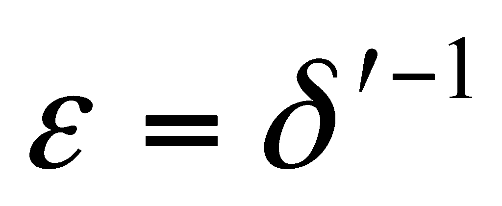 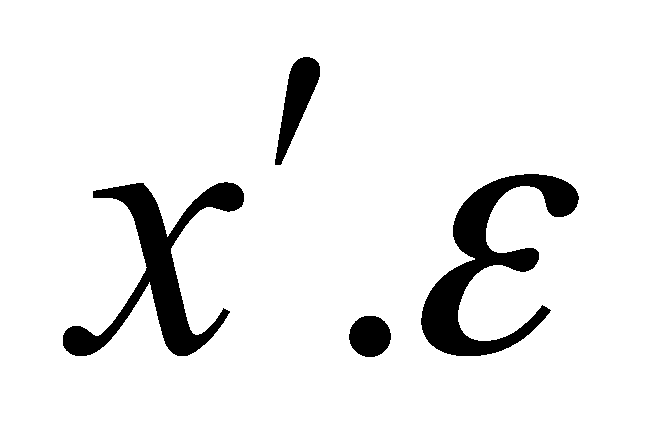
k
=
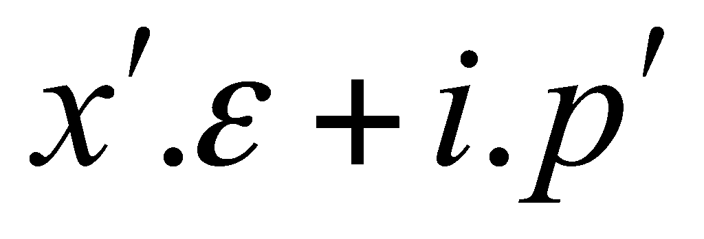
víi i lµ mét gi¸ trÞ nµo ®ã, 0 i d –1. Thö lÇn lît ®iÒu kiÖn
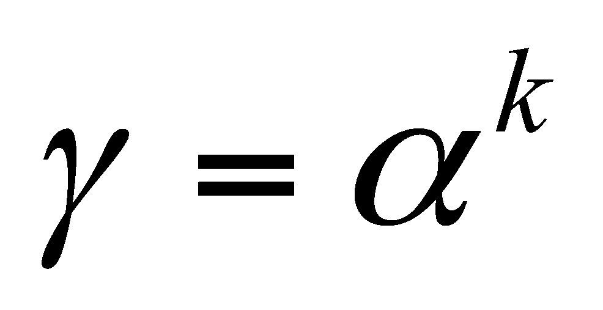
modpvíi c¸c gi¸ trÞ ®ã cña i , ta sÏ t×m ®îc k ;sau ®ã tõ k tÝnh ®îc a cÇn t×m.
2) Kh¶ n¨ng gi¶ m¹o ch÷ ký trªn mét v¨n b¶n cho tríc :
Gi¶ sö chñ thÓ A chän s¬ ®å ch÷ ký ElGamal víi cÆp kho¸ K =(K’,K''), trrong ®ã lµ kho¸ bÝ mËt. Mét ngêi ngoµi O kh«ng biÕt kho¸ bÝ mËt mµ muèn gi¶ m¹o ch÷ ký cña A trªn mét v¨n b¶n x th× ph¶i cã kh¶ n¨ng t¹o ra ®îc ch÷ ký (, ) mµ kh«ng cÇn biÕt a. Cã hai c¸ch : hoÆc chän tríc råi t×m t¬ng øng, hoÆc ngîc l¹i, chän tríc råi t×m t¬ng øng.
NÕu chän tríc råi t×m , th× ph¶i lµ
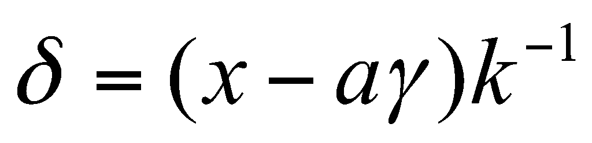 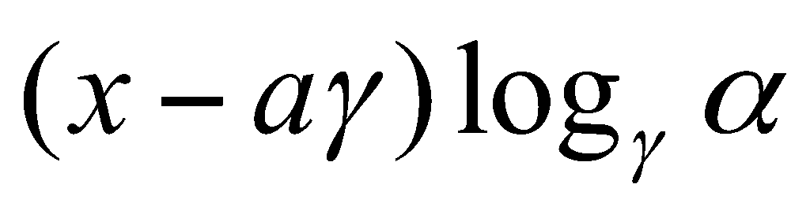
=
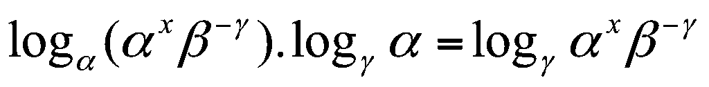
®ã lµ mét bµi to¸n tÝnh l«garit rêi r¹c, mµ ta biÕt r»ng rÊt khã.
NÕu chän tríc råi t×m th× ph¶i gi¶i ph¬ng tr×nh
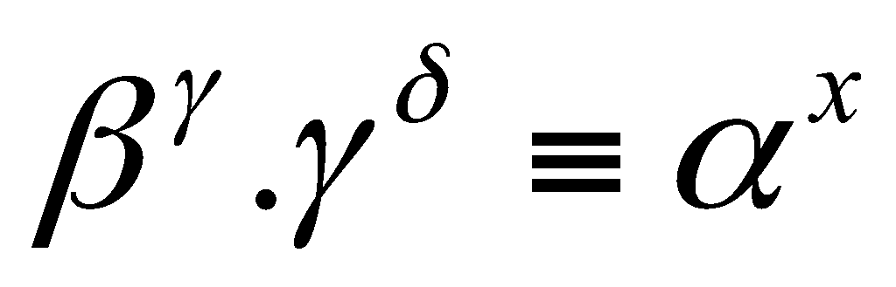
víi Èn sè . Ta cha biÕt cã c¸ch gi¶i h÷u hiÖu nµo kh«ng, nhng ch¾c lµ kh«ng dÔ h¬n bµi to¸n tÝnh l«garit rêi r¹c.
Nh vËy, ta cã thÓ tin r»ng kh¶ n¨ng gi¶ m¹o ch÷ ký trªn mét v¨n b¶n cho tríc khi kh«ng biÕt kho¸ bÝ mËt lµ rÊt Ýt, do ®ã kh«ng cã ¶nh hëng ®¸ng kÓ ®Õn tÝnh an toµn cña s¬ ®å ch÷ ký.
3)Gi¶ m¹o ch÷ ký cïng víi v¨n b¶n ®îc ký :
Cã mét kh¶ n¨ng gi¶ m¹o kh¸c lµ gi¶ m¹o c¶ v¨n b¶n göi ®i x cïng víi ch÷ ký (, ) trªn x. Kh¶ n¨ng ®ã xÈy ra khi kÎ gi¶ m¹o chän ®îc x vµ (, ) tho¶ m·n ®iÒu kiÖn kiÓm thö, cô thÓ khi chän ®îc x,, cã d¹ng sau ®©y :
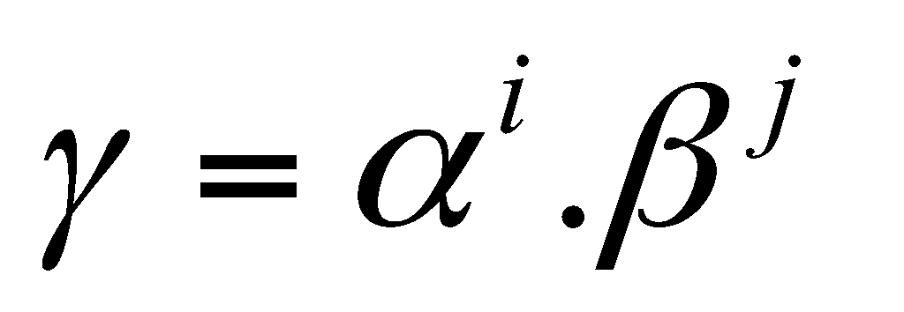
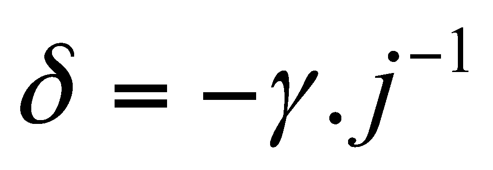
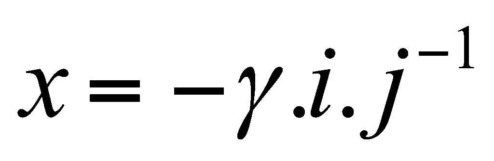
trong ®ã i, j lµ c¸c sè nguyªn sao cho 0 i, j p –2, gcd(j, p –1) = 1, vµ j –1 ®îc tÝnh theo mod(p –1). Thùc vËy, khi ®ã ta cã
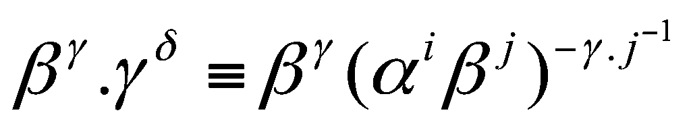
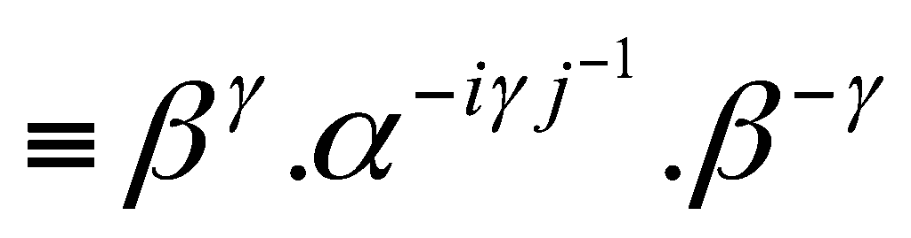
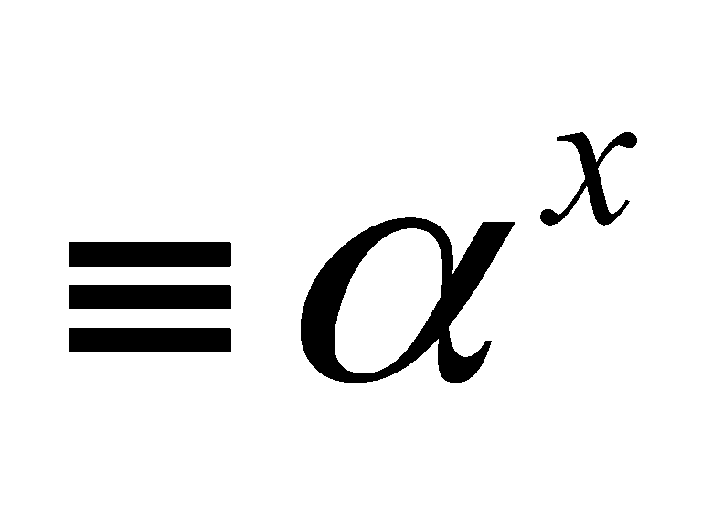
tøc ®iÒu kiÖn kiÓm thö ®îc tho¶ m·n, (, ) cã thÓ ®îc x¸c nhËn hîp thøc lµ ch÷ ký trªn x.
Cã
thÓ cã mét c¸ch gi¶ m¹o kh¸c n÷a, nÕu kÎ gi¶ m¹o sö dông
ch÷ ký ®óng (,
)
trªn mét v¨n b¶n x
cã tõ tríc ®Ó t¹o ra mét ch÷ ký
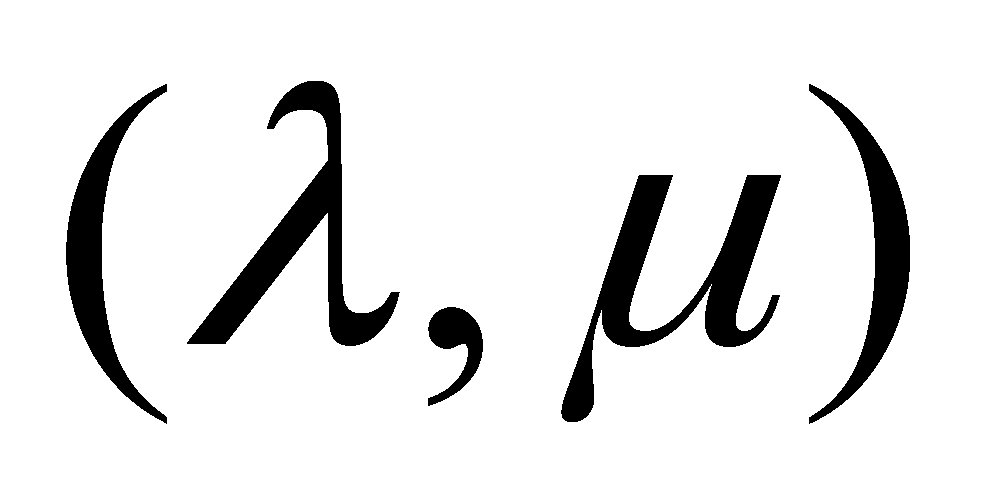 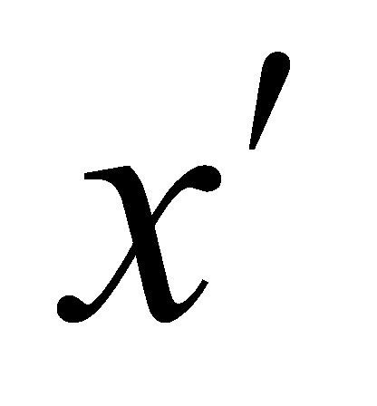
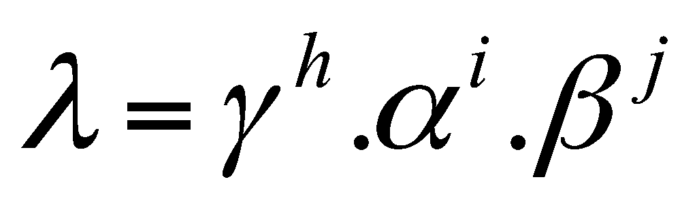
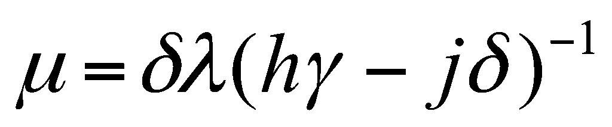
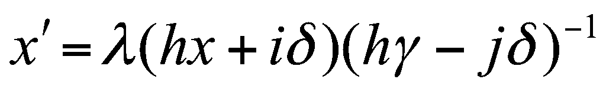
Cã thÓ thö l¹i r»ng ®iÒu kiÖn kiÓm thö ®óng ®èi víi “ch÷ ký” vµ “v¨n b¶n” , tøc lµ
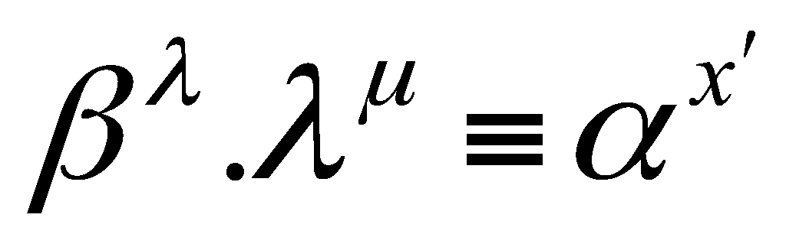
C¶ hai c¸ch gi¶ m¹o nãi trªn ®Òu cho ch÷ ký tho¶ m·n ®iÒu kiÖn kiÓm thö ®èi víi v¨n b¶n t¬ng øng, tuy nhiªn v¨n b¶n ®ã kh«ng ph¶i lµ v¨n b¶n ®îc chän theo ý muèn cña ngêi gi¶ m¹o, cho nªn kh¶ n¨ng sö dông c¸c c¸ch gi¶ m¹o ®ã trong thùc tÕ còng kh«ng cã gi¸ trÞ , do ®ã kh«ng thÓ g©y nguy h¹i ®¸ng kÓ cho tÝnh an toµn cña s¬ ®å ch÷ ký nãi chung.
5.2.3. ChuÈn ch÷ ký sè (Digital Signature Standard).
ChuÈn
ch÷ ký sè (DSS) ®îc ®Ò xuÊt tõ n¨m 1991 vµ ®îc
chÊp nhËn vµo cuèi n¨m 1994 ®Ó sö dông trong mét sè lÜnh
vùc giao dÞch ®iÖn tö t¹i Hoa kú. DSS dùa vµo s¬ ®å ch÷
ký ElGamal, víi mét vµi söa ®æi. §Ó b¶o ®¶m an toµn , sè
nguyªn tè p
cÇn ph¶i ®ñ lín, biÓu diÔn nhÞ ph©n cña p
ph¶i cã tõ 512 bit trë lªn (cô thÓ tõ 512 ®Õn 1024 bit, sè
bit lµ mét béi cña 64). Tuy nhiªn, ®é dµi ch÷ ký theo s¬
®å ElGamal lµ gÊp ®«i sè bit cña p,
mµ trong nhiÒu øng dông ngêi ta l¹i mong muèn cã ch÷ ký
®é dµi ng¾n, nªn gi¶i ph¸p söa ®æi ®îc ®Ò xuÊt
lµ: trong khi vÉn dïng p
lín víi ®é dµi biÓu diÔn 512 bit trë lªn, th× sÏ h¹n chÕ
®é dµi cña
vµ
trong ch÷ ký (,
)
vµo kho¶ng 160 bit (nh vËy c¶ ch÷ ký sÏ cã ®é dµi
kho¶ng 320 bit); ®iÒu nµy ®îc thùc hiÖn b»ng c¸ch dïng
mét nhãm con cyclic
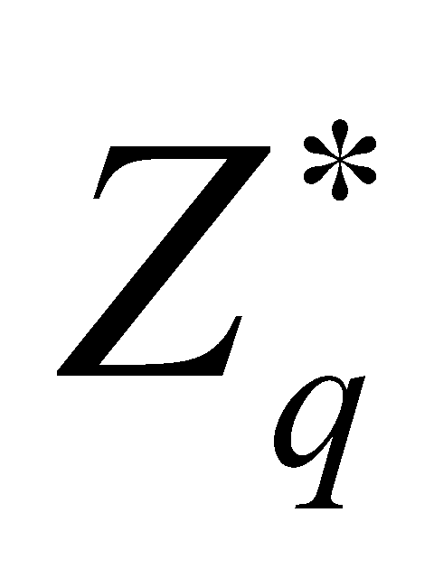 thay cho chÝnh b¶n th©n
thay cho chÝnh b¶n th©n
 ,
do ®ã mäi tÝnh to¸n vÉn ®îc thùc hiÖn nh trong
,
do ®ã mäi tÝnh to¸n vÉn ®îc thùc hiÖn nh trong
 nhng c¸c d÷ liÖu vµ thµnh phÇn ch÷ ký l¹i thuéc
. Ta
®îc s¬
®å chuÈn ch÷ ký sè DSS
nh m« t¶ sau ®©y:
nhng c¸c d÷ liÖu vµ thµnh phÇn ch÷ ký l¹i thuéc
. Ta
®îc s¬
®å chuÈn ch÷ ký sè DSS
nh m« t¶ sau ®©y:
Chän
p
lµ mét sè nguyªn tè lín cã ®é dµi biÓu diÔn
512 bit sao cho bµi to¸n tÝnh logarit rêi r¹c trong Zp
lµ khã, q
lµ mét íc sè nguyªn tè cña p
-1, cã ®é dµi biÓu diÔn cì 160 bit. Gäi
 lµ mét c¨n bËc q
cña 1 theo modp.
lµ mét c¨n bËc q
cña 1 theo modp.
§Æt
= 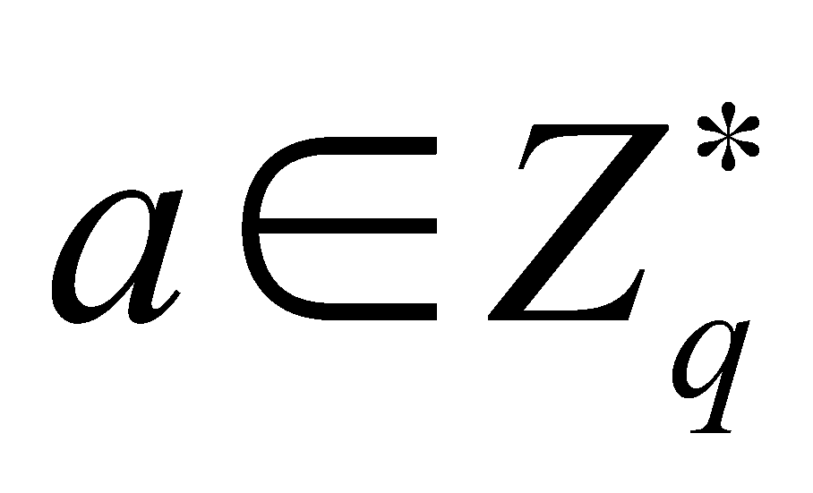 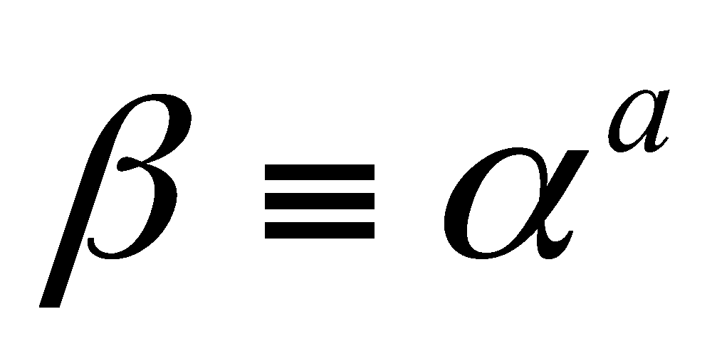 ,
=
.
Chän
,
=
.
Chän
 ,
ta chän thªm mét sè ngÉu nhiªn k
(0k
q
-1), vµ ®Þnh nghÜa ch÷ ký
,
ta chän thªm mét sè ngÉu nhiªn k
(0k
q
-1), vµ ®Þnh nghÜa ch÷ ký
(x,k ) = trong ®ã modp) modq,
modq.
ThuËt to¸n kiÓm thö ®îc ®Þnh nghÜa bëi:
(x, ) = ®óng modp)modq = ,
trong ®ã modq vµ modq.
Chó ý r»ng ta ph¶i cã 0 modq ®Ó cã thÓ tÝnh ®îc -1modq dïng trong thuËt to¸n kiÓm thö, v× vËy nÕu chän k mµ ®îc 0 modq th× ph¶i chän l¹i sè k kh¸c ®Ó cã ®îc 0 modq.
5.3. Hµm b¨m vµ ch÷ ký.
5.3.1. Hµm b¨m (hash function).
Trong c¸c phÇn trªn, ta ®· giíi thiÖu mét vµi s¬ ®å ch÷ ký ®iÖn tö. Theo c¸c s¬ ®å ®ã, ch÷ ký ®îc x¸c ®Þnh cho tõng khèi cña v¨n b¶n, vµ nÕu v¨n b¶n gåm nhiÒu khèi th× ch÷ ký cho toµn v¨n b¶n còng ph¶i do ghÐp ch÷ ký trªn tõng khèi l¹i víi nhau mµ thµnh; mµ ch÷ ký trªn tõng khèi v¨n b¶n thêng cã ®é dµi b»ng (hoÆc thËm chÝ gÊp ®«i) ®é dµi cña khèi v¨n b¶n, do ®ã ch÷ ký chung còng cã ®é dµi t¬ng ®¬ng víi ®é dµi v¨n b¶n. §ã lµ mét ®iÒu bÊt tiÖn. Ta mong muèn, nh trong trêng hîp viÕt tay, ch÷ ký chØ cã ®é dµi ng¾n vµ h¹n chÕ cho dï v¨n b¶n cã thÓ dµi bao nhiªu còng ®îc. §èi víi ch÷ ký ®iÖn tö, v× ch÷ ký ph¶i ®îc “ký” cho tõng bit cña v¨n b¶n, nªn muèn cã ch÷ ký ®é dµi h¹n chÕ trªn v¨n b¶n cã ®é dµi tuú ý th× ph¶i t×m c¸ch rót ng¾n ®é dµi v¨n b¶n. Nhng b¶n th©n v¨n b¶n kh«ng thÓ rót ng¾n ®îc, nªn chØ cßn c¸ch lµ t×m cho mçi v¨n b¶n mét b¶n “tãm lîc” cã ®é dµi h¹n chÕ, råi thay cho viÖc ký trªn toµn bé v¨n b¶n, ta ký trªn b¶n tãm lîc ®ã, xem ch÷ ký trªn b¶n tãm lîc cã t c¸ch lµ ch÷ ký trªn v¨n b¶n. Gi¶ sö lµ tËp hîp tÊt c¶ c¸c v¨n b¶n cã thÓ cã (tÊt nhiªn, trong mét lÜnh vùc nµo ®ã), vµ lµ tËp hîp tÊt c¶ c¸c b¶n “tãm lîc” cã thÓ ®îc sö dông. ViÖc t×m cho mçi v¨n b¶n mét b¶n tãm lîc t¬ng øng x¸c ®Þnh mét hµm h : . Mét hµm h nh vËy ngêi ta gäi lµ mét hµm b¨m (hash function). Th«ng thêng, lµ tËp hîp c¸c d·y bit cã ®é dµi tuú ý, vµ lµ tËp hîp c¸c d·y bit cã mét ®é dµi n cè ®Þnh, nªn ngêi ta còng ®Þnh nghÜa hµm b¨m lµ c¸c hµm h : víi c¸c tËp hîp vµ ®ã (tøc c¸c hµm h : ).
Dïng hµm b¨m h , ta xem z = h(x) lµ “tãm lîc” cña x , ®¹i diÖn cho x, vµ ta sÏ xem ch÷ ký trªn z lµ ch÷ ký trªn v¨n b¶n x ; v× z cã ®é dµi h¹n chÕ, nªn ch÷ ký trªn x còng cã ®é dµi h¹n chÕ.
Mét vÊn ®Ò ®îc ®Æt ra lµ: vËy hµm h : ph¶i tho¶ m·n nh÷ng ®iÒu kiÖn g× ®Ó h(x) xøng ®¸ng ®îc xem lµ ®¹i diÖn cña x trong viÖc t¹o lËp ch÷ ký ? Hai ®iÒu kiÖn sau ®©y thêng ®îc ngêi ta xem lµ hai ®iÒu kiÖn chñ yÕu cho mét hµm b¨m:
Hµm b¨m ph¶i lµ hµm mét phÝa, nghÜa lµ cho x tÝnh z = h(x) lµ viÖc dÔ, nhng ngîc l¹i, biÕt z tÝnh x lµ viÖc cùc khã (cã thÓ qui íc dÔ hay khã theo nghÜa tÝnh ®îc trong thêi gian ®a thøc hay kh«ng).
Hµm b¨m ph¶i lµ hµm kh«ng va ch¹m m¹nh theo nghÜa sau ®©y: kh«ng cã thuËt to¸n tÝnh ®îc trong thêi gian ®a thøc gi¶i bµi to¸n “ t×m x1 vµ x2 thuéc sao cho x1 x2 vµ h (x1) =h (x2)”; nãi c¸ch kh¸c, t×m hai v¨n b¶n kh¸c nhau cã cïng mét ®¹i diÖn lµ cùc kú khã.
(Cßn
cã mét kh¸i niÖm kh«ng
va ch¹m yÕu
®îc ®Þnh nghÜa nh sau: Cho x
.
Hµm h
lµ kh«ng va ch¹m yÕu ®èi víi x
nÕu rÊt khã t×m ®îc
 ,
,

x
vµ h
(
x
vµ h
( )
= h
(x
)).
)
= h
(x
)).
Ta
mong muèn ®é dµi cña ch÷ ký lµ ng¾n, tøc lµ ®é dµi cña
c¸c tãm lîc còng ng¾n. Nhng ng¾n bao nhiªu lµ võa?
Ng¾n bao nhiªu th× cã thÓ b¶o ®¶m tÝnh kh«ng va ch¹m m¹nh?
Vµ ë ®©y ta gÆp mét kiÓu “tÊn
c«ng”,
thêng
®îc gäi lµ “tÊn
c«ng ngµy sinh”
cã liªn quan ®Õn kh¶ n¨ng va ch¹m m¹nh, nãi r»ng trong mét
nhãm gåm 23 ngêi ®îc chän mét c¸ch ngÉu nhiªn th×
Ýt nhÊt cã hai ngêi cã cïng ngµy sinh (tøc cã va ch¹m
m¹nh!). Mét c¸ch tæng qu¸t, ngêi ta chøng minh ®îc
r»ng: NÕu
cã tÊt c¶ n b¶n tãm lîc, vµ
th×
trong k v¨n b¶n ®îc chän ngÉu nhiªn cã Ýt nhÊt mét va
ch¹m m¹nh (tøc cã

x vµ h (
x vµ h ( )
= h (x )) víi x¸c suÊt .
)
= h (x )) víi x¸c suÊt .
Khi , ta cã . Trong trêng hîp ngµy sinh, ta cã n =365, do ®ã
Trë l¹i víi vÊn ®Ò chän ®é dµi (cña biÓu diÔn nhÞ ph©n) cho c¸c tãm lîc, nÕu ta lÊy ch¼ng h¹n ®é dµi 40 bit, th× n = 240, vµ do ®ã tõ k 220 (kho¶ng mét triÖu) v¨n b¶n sÏ cã mét va ch¹m m¹nh víi x¸c suÊt 1/2, nh vËy khã b¶o ®¶m ®îc an toµn. Nhng nÕu ta lÊy dé dµi cña b¶n tãm lîc lµ 128, tøc n =2128, th× va ch¹m m¹nh cã thÓ xÈy ra víi x¸c suÊt 1/2 khi sè c¸c v¨n b¶n cã thÓ lµ k 264, mét con sè kh¸ lín (so víi sè v¨n b¶n cã thÓ nÈy sinh trong thùc tÕ), do ®ã hy väng tÝnh an toµn sÏ ®îc b¶o ®¶m. Cã thÓ v× vËy mµ trong chuÈn DSS ngêi ta chän ®é dµi cña c¸c tãm lîc lµ 160 bit.
5.3.2. Hµm b¨m Chaum-van Heijst-Pfitzmann.
Díi ®©y ta sÏ giíi thiÖu mét thÝ dô cô thÓ vÒ mét hµm b¨m ®îc x©y dùng dùa trªn tÝnh khã cña bµi to¸n l«garit rêi r¹c, do c¸c t¸c gi¶ Chaum, van Heijst vµ Pfitzmann ®Ò xuÊt n¨m 1992. Hµm b¨m ®ã ®îc x©y dùng nh sau:
Gi¶
sö p
lµ mét sè nguyªn tè lín d¹ng Sophie Germain, tøc cã d¹ng p
= 2q
+1, trong ®ã q
còng lµ sè nguyªn tè. Chän
vµ
lµ hai phÇn tö nguyªn thuû cña
 .
ViÖc tÝnh
,
khi biÕt
vµ
, lµ rÊt khã. Hµm b¨m
®îc
®Þnh nghÜa nh sau: víi mäi
ta cã
.
ViÖc tÝnh
,
khi biÕt
vµ
, lµ rÊt khã. Hµm b¨m
®îc
®Þnh nghÜa nh sau: víi mäi
ta cã
modp.
Ta gäi hµm b¨m h ®îc ®Þnh nghÜa nh vËy lµ hµm b¨m Chaum-van Heijst-Pfitzmann. Hµm b¨m ®ã cã c¸c tÝnh chÊt lµ hµm mét phÝa vµ kh«ng va ch¹m m¹nh nh yªu cÇu ®èi víi mét hµm b¨m. TÝnh mét phÝa cña hµm ®ã ®îc suy ra tõ tÝnh mét phÝa cña hµm l«garit rêi r¹c. Cßn tÝnh kh«ng va ch¹m m¹nh cña h ®îc chøng minh bëi ®Þnh lý sau ®©y : NÕu biÕt mét va ch¹m m¹nh ®èi víi h th× cã thÓ tÝnh ®îc mét c¸ch cã hiÖu qu¶.
Gi¶ sö cã mét va ch¹m
trong ®ã (x1,x2) (x3,x4). Nh vËy ta cã
(modp),
tøc lµ
(modp).
§Æt d =gcd(x4 - x2, p -1). V× p -1 = 2q vµ q lµ sè nguyªn tè, nªn ta cã d {1,2,q, p -1}. Ta xÐt lÇn lît bèn kh¶ n¨ng ®ã cña d.
Gi¶ sö d =1. Khi ®ã, ®Æt y = (x4 - x2)-1mod(p -1), ta cã
(modp)
(modp),
vµ ta cã thÓ tÝnh logarit rêi r¹c nh sau :
= (x1 - x3)(x4 - x2)-1 mod(p –1).
B©y giê gi¶ sö d = 2. V× p -1 = 2q vµ q lµ sè lÎ, ta ph¶i cã gcd(x4 - x2, q) =1. Còng ®Æt y = (x4 - x2)-1modq, ta cã
(x4 - x2)y = kq +1
víi k lµ mét sè nguyªn nµo ®ã, vµ ta cã
(modp)
(modp) (v× (modp))
 (modp).
(modp).
Nh vËy ta cã
(modp)
(modp).
Tõ ®ã suy ra
mod(p -1)
hay lµ +q mod(p -1).
Cã thÓ thö ®Ó x¸c ®Þnh gi¸ trÞ nµo trong hai gi¸ trÞ ®ã ®óng lµ .
B©y giê ta xÐt trrêng hîp d =q. V× 0 x2 , x4 q -1, nªn
-(q -1) x4 - x2 q -1.
Do ®ã kh«ng thÓ cã gcd(x4 - x2, p -1) = q, trêng hîp nµy kh«ng thÓ xÈy ra.
Cuèi cïng lµ trêng hîp d = p -1. §iÒu nµy chØ xÈy ra nÕu x2 = x4. Nhng khi ®ã ta cã
(modp)
(modp)
vµ x1=x3. Nh vËy (x1, x2) = (x3, x4), m©u thuÉn víi gi¶ thiÕt. VËy trêng hîp nµy còng kh«ng thÓ xÈy ra. §Þnh lý nãi trªn ®îc chøng minh. Hµm b¨m Chaum-van Heijst-Pfitzmann lµ kh«ng va ch¹m m¹nh.
Chó ý r»ng nÕu p cã ®é dµi biÓu diÔn nhÞ ph©n lµ t bit, tøc Zp lµ tËp con cña ={0,1}t , th× q cã ®é dµi t -1 bit, vµ ZqZq lµ tËp con cña = {0,1}m víi m =2(t -1). Hµm b¨m h ®îc ®Þnh nghÜa ë trªn cã thÓ xem lµ hµm h : . Víi môc ®Ých ch÷ ký, ta muèn cã nh÷ng hµm b¨m h : víi lµ tËp c¸c tõ cã sè bit h¹n chÕ, nhng l¹i lµ tËp c¸c tõ cã ®é dµi tuú ý. Muèn vËy, ta ph¶i cã kh¶ n¨ng më réng hµm b¨m; ®Þnh lý sau ®©y cho ta kh¶ n¨ng ®ã.
5.3.3. Më réng hµm b¨m.
B©y giê gi¶ sö h : (ë ®©y Z2 ={0,1}) lµ mét hµm b¨m kh«ng va ch¹m m¹nh tho¶ m·n m t +1 (hµm b¨m trong môc trªn tho· m·n ®iÒu kiÖn ®ã). Ta sÏ dïng h ®Ó x©y dùng mét hµm b¨m nh sau :
Gi¶ sö x , ta c¾t x thµnh c¸c ®o¹n cã cïng ®é dµi l bit, trong ®ã l = m-t-1, nÕu ®o¹n cuèi cïng cha cã ®ñ l bit, th× ta bæ sung thªm c¸c bit 0 cho ®ñ, vµ ®Ó ghi nhí sù bæ sung ®ã (ch¼ng h¹n lµ d bit) ta thªm cho x mét ®o¹n cuèi xk +1 lµ biÓu diÔn nhÞ ph©n l bit cña sè d . Nh vËy mçi x ®îc viÕt l¹i díi d¹ng
x = x1x2....xkxk +1,
trong ®ã víi mäi i =1,2,...,k, k +1, xi (ta chó ý r»ng nÕu biÕt x díi d¹ng nµy ta sÏ kh«i phôc l¹i ®îc x ë d¹ng gèc ban ®Çu). Ta ®Þnh nghÜa mét c¸ch ®Ö qui d·y tõ g1, g2,..., gk +1 vµ hµm nh sau :
g1 = h (0t +1x1),
gi+1=h (gi1xi+1) (i =1,...,k)
(x) = gk+1 .
Nh vËy, gi¸ trÞ cña hµm b¨m lµ mét tõ cã ®é dµi t bit.
Ngêi ta chøng minh ®îc ®Þnh lý sau ®©y : NÕu hµm b¨m h cã tÝnh chÊt kh«ng va ch¹m m¹nh th× hµm b¨m më réng còng cã tÝnh chÊt kh«ng va ch¹m m¹nh.
5.3.4. X©y dùng hµm b¨m tõ c¸c hÖ mËt m·.
Cã mét ph¬ng ph¸p chung ®Ó x©y dùng hµm b¨m lµ sö dông c¸c hÖ mËt m· kho¸ ®èi xøng. Gi¶ sö (P , C , K , E , D ) lµ mét hÖ mËt m· kho¸ ®èi xøng mµ ®é an toµn ®· ®îc thö nghiÖm. §Ó tiÖn tr×nh bµy, ta cã thÓ gi¶ thiÕt r»ng P =C =K = . Nªn chän n kh¸ lín, cì n 128 ®Ó tr¸nh kiÓu “tÊn c«ng ngµy sinh”. Ch¼ng h¹n, cã thÓ chän hÖ mËt m· ®ã lµ hÖ DES (cã thÓ víi nh÷ng ®iÒu chØnh cÇn thiÕt ®Ó cã ®é dµi c¸c ký tù trong P , C , K thÝch hîp). XuÊt ph¸t tõ hµm lËp mËt m· E ta x¸c ®Þnh mét hµm f : sao cho víi mäi (x ,y) , gi¸ trÞ cña f(x, y) ®îc tÝnh theo x, y vµ hµm E .
B©y giê gi¶ sö cho x . Nh trong môc trªn, ta cã thÓ viÕt x díi d¹ng ghÐp nèi liªn tiÕp cña k ®o¹n ký tù, mçi ®o¹n cã n bit :
x = x1x2....xk .
TiÕp ®ã, ta chän mét gi¸ trÞ ban ®Çu g0 , vµ x©y dùng tiÕp g1, g2,...,gk theo qui t¾c
gi = f (xi , gi -1) víi i =1,2,...,k.
Vµ cuèi cïng, ta ®Þnh nghÜa gi¸ trÞ hµm b¨m h (x ) = gk . Hµm b¨m h ®îc ®Þnh nghÜa nh vËy lµ mét hµm ¸nh x¹ vµo ; trong trêng hîp chung cã thÓ kh«ng b¶o ®¶m tÝnh an toµn, nhng ngêi ta ®· chøng tá ®îc r»ng nã lµ an toµn trong c¸c trêng hîp hµm f ®îc chän nh sau:
f (x, y) = x E (y,x),
f (x, y) = x y E (y,x),
f (x, y) = x E (y,x y),
f (x, y) = x y E (y,x y) ,
trong ®ã lµ phÐp céng mod2 tõng cÆp bit mét cña hai tõ cã sè bit b»ng nhau.
5.4. Mét sè s¬ ®å ch÷ ký kh¸c.
5.4.1. S¬ ®å ch÷ ký Rabin.
T¬ng t nh s¬ ®å ch÷ ký RSA, s¬ ®å ch÷ ký Rabin còng sö dông sè nguyªn n lµ tÝch cña hai sè nguyªn tè lín p vµ q, n =p.q , víi hµm mét phÝa ë ®©y lµ hµm lÊy b×nh ph¬ng cña mét sè nguyªn theo modn, cã hµm ngîc lµ hµm t×m c¨n bËc hai theo modn, mét hµm kh«ng tÝnh ®îc mét c¸ch dÔ dµng nÕu kh«ng biÕt c¸c thõa sè p ,q cña n.
Nh vËy, mét c¸ch ®¹i thÓ, s¬ ®å ch÷ ký Rabin cã thÓ ®îc m« t¶ lµ mét bé
S = (, , , , ),
trong ®ã = Qn , = Zn , lµ tËp c¸c cÆp kho¸ K =(K’,K''), trong ®ã K'' = n lµ kho¸ c«ng khai dïng ®Ó kiÓm thö ch÷ ký,n lµ tÝch cña hai sè nguyªn tè lín p vµ q, n =p.q , víi p q 3 (mod4), cßn K’ = d víi d = (n -p -q +5)/8 lµ kho¸ bÝ mËt dïng ®Ó ký. C¸c hµm vµ ®îc x¸c ®Þnh nh sau:
(x) = x d modn ,
(x,y ) = ®óng x y 2 (modn ).
Ta chó ý r»ng nÕu p vµ q ®îc chän víi tÝnh chÊt nãi trªn th× víi mäi x =Qn , x d modn lµ mét c¨n bËc hai cña x theo modn, v×
(modn) ;
vµ c¸c hµm vµ ®îc ®Þnh nghÜa nh trªn lµ hîp thøc.
Y tëng c¬ b¶n vÒ mét s¬ ®å ch÷ ký Rabin chØ ®¬n gi¶n lµ nh thÕ, tuy nhiªn ®Ó cã mét s¬ ®å ch÷ ký dïng ®îc trong thùc tÕ, ngêi ta muèn tËp c¸c v¨n b¶n kh«ng h¹n chÕ trong Qn , mµ réng r·i h¬n, lµ Zn ch¼ng h¹n, nhng ®Ó ®îc nh vËy, ta ph¶i dïng thªm mét hµm R ®Ó chuyÓn mét x ban ®Çu vÒ mét gi¸ trÞ m nµo ®ã cã quan hÖ gÇn gòi víi mét thÆng d bËc hai theo modn ®Ó s¬ ®å ch÷ ký theo ý tëng nãi trªn cã thÓ vËn hµnh ®îc. §Ó thùc hiÖn ®îc mét s¬ ®å ch÷ ký söa ®æi nh vËy, ngêi ta sÏ dïng mét bæ ®Ò to¸n häc sau ®©y:
Bæ ®Ò 5.4.1. Gi¶ sö p vµ q lµ c¸c sè nguyªn tè kh¸c nhau cïng ®ång d víi 3 theo mod4, vµ n = p.q. Khi ®ã ta cã:
NÕu gcd(x,n) =1, th× (modn)
NÕu , th× modn lµ mét c¨n bËc hai cña x theo modn.
NÕu x lµ sè nguyªn cã vµ d =(n -p -q +5)/8, th×
modn =
NÕu p q (mod8) th× Do ®ã, nh©n mét sè nguyªn x bÊt kú víi 2 hay víi 2-1modn ®Òu ®¶o ngîc ký hiÖu Jacobi cña x.
Ngêi ®äc cã thÓ tù chøng minh lÊy bæ ®Ò trªn.
B©y giê mét s¬ ®å ch÷ ký Rabin söa ®æi cã thÓ ®îc x©y dùng nh sau : Tríc hÕt ta x¸c ®Þnh cho mçi thùc thÓ tham gia mét cÆp kho¸ K =(K’,K''), víi kho¸ c«ng khai K’ = n, kho¸ bÝ mËt K'' = (p,q) hay = d = (n -p -q +5)/8,trong ®ãp vµ q lµ hai sè nguyªn tè cã tÝnh chÊt p 3(mod8) vµ q 7(mod8),n =p.q ;p vµ q ®îc chän vµ gi÷ bÝ mËt.
Thùc thÓ A cã kho¸ K =(K’,K'') sÏ t¹o ch÷ ký trªn mét v¨n b¶n x (xZn , x (n -6)/16) b»ng c¸c bíc sau ®©y :
TÝnh m =R(x) =16x +6.
TÝnh ký hiÖu Jacobi
NÕu J =1 th× tÝnh s =md modn,
nÕu J = -1 th× tÝnh s =(m/2)d modn.
s lµ ch÷ ký cña A trªn x.
ViÖc kiÓm thö ch÷ ký s cña A b»ng c¸ch dïng khãa c«ng khai n ®îc thùc hiÖn bëi c¸c bíc sau ®©y:
TÝnh m*=s 2modn
NÕu m* 6(mod8), th× lÊy m =m*,
nÕu m* 3(mod8), th× lÊy m =2m*,
nÕu m* 7(mod8), th× lÊy m =n -m*,
nÕu m* 2(mod8), th× lÊy m =2(n -m *).
Thö ®iÒu kiÖn m 6 (mod16), nÕu sai th× b¸c bá ch÷ ký.
d. NÕu ®iÒu kiÖn trªn ®óng th× lÊy x = R -1(m) = (m -6)/16.
(Theo ®Þnh nghÜa cña phÐp kiÓm thö th× ta cã thÓ viÕt ®iÒu d lµ: thuËt to¸n kiÓm thö x¸c nhËn s lµ ch÷ ký cña A trªn v¨n b¶n x nÕu
x = R -1(m) = (m -6)/16).
Ta cã thÓ chøng minh tÝnh hîp thøc cña c¸c thuËt to¸n ký vµ kiÓm thö nh sau: C¸c bíc t¹o ch÷ ký b-c cho ta ch÷ ký Rabin cña
v =m hay v =m/2 tuú theo ký hiÖu Jacobi b»ng 1 hay kh«ng. Theo ®iÒu 4 cña bæ ®Ò 5.4.1, cã ®óng mét kh¶ n¨ng hoÆc m, hoÆc m/2 cã gi¸ trÞ ký hiÖu Jacobi b»ng 1. Gi¸ trÞ v ®îc ký lµ 3 hoÆc 6 (mod8). Theo ®iÒu 3 cña bæ ®Ò ®ã, s 2modn =v hoÆc = n -v lµ tuú theo vQn hay kh«ng. V× n 5 (mod8), cã thÓ x¸c ®Þnh mét c¸ch duy nhÊt mét trong hai trêng hîp ®ã.
ThÝ dô: Gi¶ thö chän p =19, q =31, do ®ã n =589 vµ d =68. A cã kho¸ c«ng khai n =589 vµ kho¸ bÝ mËt d =68. Kh«ng gian ký gåm c¸c gi¸ trÞ cña m øng víi c¸c gi¸ trÞ x = 0,1,2,...,32,33 cïng víi c¸c gi¸ trÞ cña ký hiÖu Jacobi t¬ng øng ®îc cho bëi b¶ng sau ®©y:
m
|
6 22 54 70 86 102 118 134 150 -1 1 -1 -1 1 1 1 1 -1
|
m
|
166 182 198 214 230 246 262 278 294 1 -1 1 1 1 1 -1 1 -1
|
m
|
326 358 374 390 406 422 438 454 470 -1 -1 -1 -1 -1 1 1 1 -1 |
m
|
486 502 518 534 550 566 582 -1 1 -1 -1 1 -1 1 |
Ta t¹o ch÷ ký víi th«ng b¸o x =12. TÝnh m = R(12) =198, vµ s = 19868mod589 = 102. Ch÷ ký lµ s =102.
Dïng thuËt to¸n kiÓm thö ta cã: m* = s 2modn = 1022mod589 =391. V× m* 7 (mod8), ta lÊy m =n -m*= 589-391=198. Cuèi cïng, tÝnh x = R -1(m) = (198-6)/16 =12, vµ ch÷ ký ®îc x¸c nhËn.
5.4.2. S¬ ®å ch÷ ký Fiat-Shamir.
Mçi s¬ ®å ch÷ ký Fiat-Shamir sö dông mét hµm b¨m h : ,biÕn mäi d·y ký tù nhÞ ph©n x ®é dµi tuú ý thµnh mét d·y cã ®é dµi k bit, ®îc gäi lµ “tãm lîc” cña x .
Mçi
thùc thÓ A t¹o cho m×nh cÆp kho¸ K
=(K’,K'')
b»ng
c¸ch: chän hai sè nguyªn tè kh¸c nhau p
vµ q,
vµ ®Æt n
=p.q
; sau ®ã chän ngÉu nhiªn k
sè nguyªn kh¸c nhau s1,...,
sk
 ,
vµ tÝnh víi mçi j
(1
j
k)
modn.
X¸c ®Þnh kho¸ bÝ mËt K’
lµ
bé k
(s1,...,
sk
), vµ kho¸ c«ng khai K''
lµ
gåm bé k
(v1,...,vk)
vµ m«®uyn n.
,
vµ tÝnh víi mçi j
(1
j
k)
modn.
X¸c ®Þnh kho¸ bÝ mËt K’
lµ
bé k
(s1,...,
sk
), vµ kho¸ c«ng khai K''
lµ
gåm bé k
(v1,...,vk)
vµ m«®uyn n.
LÊy
=
 ,
=
,
vµ x¸c ®Þnh c¸c thuËt to¸n ký vµ kiÓm thö nh sau:
,
=
,
vµ x¸c ®Þnh c¸c thuËt to¸n ký vµ kiÓm thö nh sau:
§Ó
t¹o ch÷ ký trªn v¨n b¶n x
=
 ,
A chän ngÉu nhiªn mét sè nguyªn d¬ng r
Zn
, tÝnh u
=r
2modn
, tÝnh e
=(e1,...,
ek
) = h(x
u),
trong ®ã x
u
lµ d·y ký tù nhÞ ph©n thu ®îc b»ng c¸ch nèi ghÐp
biÓu diÕn nhÞ ph©n cña sè u
tiÕp sau biÓu diÔn nhÞ ph©n cña sè x.
Ch÷ ký cña A trªn x
®îc ®Þnh nghÜa lµ (e,s
), trong ®ã
,
A chän ngÉu nhiªn mét sè nguyªn d¬ng r
Zn
, tÝnh u
=r
2modn
, tÝnh e
=(e1,...,
ek
) = h(x
u),
trong ®ã x
u
lµ d·y ký tù nhÞ ph©n thu ®îc b»ng c¸ch nèi ghÐp
biÓu diÕn nhÞ ph©n cña sè u
tiÕp sau biÓu diÔn nhÞ ph©n cña sè x.
Ch÷ ký cña A trªn x
®îc ®Þnh nghÜa lµ (e,s
), trong ®ã
modn.
§Ó kiÓm thö (e,s ) cã ®óng lµ ch÷ ký cña A trªn x hay kh«ng, ta dïng kho¸ c«ng khai (v1,...,vk) vµ m«®uyn n ®Ó tÝnh
modn ,
råi tÝnh e’ = h(x w); vµ x¸c nhËn (e,s ) ®óng lµ ch÷ ký cña A trªn x khi vµ chØ khi e = e’ .
DÔ chøng minh r»ng nÕu (e,s ) lµ ch÷ ký cña A trªn x th× e = e’, vµ ngîc l¹i, tøc c¸c thuËt to¸n ký vµ kiÓm thö x¸c ®Þnh nh trªn lµ hîp thøc.
5.4.3. S¬ ®å ch÷ ký Schnorr.
S¬ ®å ch÷ ký Schnorr còng ®îc x©y dùng t¬ng tù nh s¬ ®å Fiat-Shamir, nhng ë ®©y ta dïng mét hµm b¨m mét phÝa dùa trªn bµi to¸n khã tÝnh l«garit rêi r¹c.
Mçi thùc thÓ A t¹o cho m×nh cÆp kho¸ K =(K’,K'') b»ng c¸ch: Chän mét sè nguyªn tè lín p, mét sè nguyªn tè q lµ íc sè cña p -1, mét phÇn tö cÊp q cña , vµ mét sè a , 1 a q -1. Gi÷ K’=a lµ kho¸ bÝ mËt , vµ c«ng bè kho¸ c«ng khai K'' = (p,q,,r), trong ®ã r = a modp.
Chän
mét hµm b¨m h :
.
LÊy
=
 vµ
=
.
vµ
=
.
§Ó
ký trªn mét th«ng b¸o x
= A chän thªm mét sè ngÉu nhiªn k
Zq
vµ tÝnh y
=
k
modp,
e
=
vµ
s
= ae+k
modq. Ch÷
ký cña A trªn x
®îc x¸c ®Þnh lµ cÆp sè (s,
e).
A chän thªm mét sè ngÉu nhiªn k
Zq
vµ tÝnh y
=
k
modp,
e
=
vµ
s
= ae+k
modq. Ch÷
ký cña A trªn x
®îc x¸c ®Þnh lµ cÆp sè (s,
e).
§Ó kiÓm thö xem cÆp sè (s, e) cã ®óng lµ ch÷ ký cña A trªn x hay kh«ng, ta dïng kho¸ c«ng khai K'' = (p,q,,r) ®Ó tÝnh
modp
vµ
 ,
,
vµ x¸c nhËn (s, e) ®óng lµ ch÷ ký cña A trªn x khi vµ chØ khi .
Ta cã thÓ chøng minh r»ng c¸c thuËt to¸n ký vµ kiÓm thö x¸c ®Þnh nh Ëy lµ hîp thøc. Thùc vËy, nÕu ch÷ ký(s, e) ®îc ký bëi A trªn x, th×
modp = modp = modp =y,
do ®ã = =e. Ngîc l¹i, còng dÔ chøng tá r»ng nÕu th× (s, e) ®óng lµ ch÷ ký cña A trªn x.
5.5.Ch÷ ký kh«ng phñ ®Þnh ®îc vµ kh«ng chèi bá ®îc
5.5.1. §Æt vÊn ®Ò. Trong c¸c phÇn tríc ta ®· tr×nh bµy mét vµi s¬ ®å ch÷ ký ®iÖn tö ; trong c¸c s¬ ®å ®ã, viÖc kiÓm thö tÝnh ®óng ®¾n cña ch÷ kýlµ do ngêi nhËn thùc hiÖn. Nh vËy, c¶ v¨n b¶n cïng ch÷ ký cã thÓ ®îc sao chÐp vµ t¸n ph¸t cho nhiÒu ngêi mµ kh«ng ®îc phÐp cña ngêi göi. §Ó tr¸nh kh¶ n¨ng ®ã, ngêi ta ®a ra c¸c s¬ ®å ch÷ ký kh«ng phñ ®Þnh ®îc víi mét yªu cÇu lµ ch÷ ký kh«ng thÓ ®îc kiÓm thö nÕu kh«ng cã sù hîp t¸c cña ngêi ký. Sù hîp t¸c ®ã ®îc thùc hiÖn th«ng qua mét giao thøc mêi hái vµ tr¶ lêi gi÷a ngêi nhËn vµ ngêi göi (còng lµ ngêi ký), gäi lµ giao thøc kiÓm thö. Khi ch÷ ký ®ßi hái ®îc x¸c nhËn b»ng mét giao thøc kiÓm thö th× mét vÊn ®Ò kh¸c l¹i nÈy sinh lµ lµm thÕ nµo ®Ó ng¨n c¶n ngêi ký chèi bá mét ch÷ ký mµ anh ta ®· ký b»ng c¸ch tuyªn bè r»ng ch÷ ký ®ã lµ gi¶ m¹o? §Ó ®¸p øng yªu cÇu ®ã, cÇn cã thªm mét giao thøc chèi bá, th«ng qua giao thøc nµy ngêi ký cã thÓ chøng minh mét ch÷ ký kh«ng ph¶i cña m×nh ®óng thùc lµ gi¶ m¹o. NÕu anh ta tõ chèi kh«ng tham gia giao thøc ®ã th× cã b»ng chøng ®Ó chøng tá r»ng anh ta kh«ng chøng minh ®îc ®ã lµ ch÷ ký gi¶ m¹o, tøc kh«ng chèi bá ®îc ch÷ ký cña m×nh!
Nh vËy, mét s¬ ®å ch÷ ký kh«ng phñ ®Þnh ®îc sÏ gåm ba phÇn : mét thuËt to¸n ký, mét giao thøc kiÓm thö vµ mét giao thøc chèi bá.
5.5.2. S¬ ®å ch÷ ký Chaum-van Antverpen.
S¬
®å ch÷ ký kh«ng phñ ®Þnh ®îc ®Çu tiªn ®îc
Chaum vµ van Antverpen ®Ò xuÊt n¨m 1989. Mét chñ thÓ A chän
mét sè nguyªn tè d¹ng Sophie Germain p
=2q
+1, trong ®ã q
còng lµ sè nguyªn tè; chän
lµ mét phÇn tö cÊp q
. Gäi G
lµ nhãm con (theo phÐp nh©n) cÊp q
sinh bëi
cña
 .
S¬ ®å ch÷ ký Chaum - van Antverpen cña A gåm cã:
=
=G,
cÆp kho¸ K
=(K’,K'')
gåm
cã kho¸ bÝ mËt K’
= a
vµ
kho¸ c«ng khai K''
= (p,,
a, ),
trong
®ã
lµ
mét sè nguyªn d¬ng
p
-1, vµ
=
a modp.
.
S¬ ®å ch÷ ký Chaum - van Antverpen cña A gåm cã:
=
=G,
cÆp kho¸ K
=(K’,K'')
gåm
cã kho¸ bÝ mËt K’
= a
vµ
kho¸ c«ng khai K''
= (p,,
a, ),
trong
®ã
lµ
mét sè nguyªn d¬ng
p
-1, vµ
=
a modp.
ThuËt to¸n ký: A ký trªn v¨n b¶n x =G víi ch÷ ký
y = modp.
Giao thøc kiÓm thö : Víi v¨n b¶n x vµ ch÷ ký y ngêi nhËn B cïng ngêi ký A thùc hiÖn giao thøc kiÓm thö sau ®©y:
1. B chän ngÉu nhiªn hai sè tÝnh modp vµ göi c cho A,
A tÝnh modp vµ göi d cho B.
B chÊp nhËn y lµ ch÷ ký cña A trªn x nÕu .
Giao thøc chèi bá: gåm c¸c bíc sau ®©y:
1. B chän ngÉu nhiªn hai sè tÝnh modp vµ göi c cho A,
2. A tÝnh modp vµ göi d cho B,
3. B thö ®iÒu kiÖn d ≢
4.B chän tiÕp hai sè tÝnh modp vµ göi C cho A,
A tÝnh modp vµ göi D cho B,
B thö ®iÒu kiÖn D ≢
B kÕt luËn y lµ ch÷ ký gi¶ m¹o, nÕu (modp).
5.5.3. TÝnh hîp thøc cña c¸c giao thøc.
Ta sÏ chøng minh hai ®Þnh lý sau ®©y ®Ó chøng tá tÝnh hîp thøc cña c¸c giao thøc kiÓm thö vµ chèi bá cña s¬ ®å ch÷ ký Chaum-van Antverpen.
§Þnh lý 5.5.1. a)NÕu y ®óng lµ ch÷ ký cña A trªn x, tøc y ≡x a modp,th× viÖc B chÊp nhËn y lµ ch÷ ký cña A trªn x theo giao thøc kiÓm thö lµ ®óng.
b) NÕu y ≢x a(modp), tøc y kh«ng ph¶i lµ ch÷ ký cña A trªn x, th× viÖc B, theo giao thøc kiÓm thö, chÊp nhËn y lµ ch÷ ký cña A trªn x, cã thÓ xÈy ra víi x¸c suÊt 1/q.
Chøng minh. a) Gi¶ sö y ≡x a modp. Khi ®ã, (chó ý r»ng tÊt c¶ c¸c sè mò ®Òu ®îc tÝnh theo modq). Ta còng cã
Do ®ã,
(modp),
vµ theo giao thøc kiÓm thö, B chÊp nhËn y lµ ch÷ ký cña A trªn x, viÖc chÊp nhËn ®ã lµ ®óng.
b)B©y
giê gi¶ thö y
≢x
a(modp).
Tríc hªt ta chó ý r»ng mçi lêi mêi hái c
t¬ng øng víi ®óng q
cÆp (e1,
e2),
v× y
vµ
lµ c¸c phÇn tö cña nhãm nh©n G
cÊp q.
Khi A nhËn ®îc c©u hái c
, A kh«ng cã c¸ch g× ®Ó biÕt lµ B ®· dïng cÆp (e1,
e2)
nµo trong q
cÆp cã thÓ ®ã. Ta chøng minh r»ng, do y
≢x
a(modp),
nªn trong q
cÆp ®ã chØ cã ®óng mét cÆp tho¶ m·n ®ång d thøc
(modp).
Thùc vËy, ta cã thÓ ®Æt
víi i, j, k, l
Zq
,v×
lµ phÇn tö sinh cña G
,vµ hai ®ång d thøc
vµ
 (modp)
t¬ng ®¬ng víi hai ph¬ng tr×nh
(modp)
t¬ng ®¬ng víi hai ph¬ng tr×nh
Tõ gi¶ thiÕt y ≢x a(modp) suy ra l – ak ≢ 0 (modq), tøc ®Þnh thøc cña hÖ ph¬ng tr×nh nãi trªn (víi c¸c Èn sè e1, e2) lµ ≢ 0 (modq). Nh vËy, mçi d G lµ c©u tr¶ lêi ®óng (theo giao thøc kiÓm thö) chØ víi mét cÆp (e1, e2) trong q cÆp cã thÓ. V× vËy, nÕu y ≢x a(modp) , th× x¸c suÊt ®Ó B chÊp nhËn y lµ ch÷ ký cña A trªn x (theo giao thøc) lµ b»ng 1/q. §Þnh lý ®îc chøng minh.
§èi víi giao thøc chèi bá, ta cã ®Þnh lý sau ®©y :
§Þnh lý 5.5.2. a) NÕu y ≢x a(modp), vµ c¶ A,B ®Òu tu©n theo giao thøc chèi bá, th× (modp), tøc giao thøc cho kÕt qu¶ chÝnh x¸c.
b) NÕu y ≡x a modp, A vµ B ®Òu tu©n theo giao thøc, vµ cã
d ≢
D
≢

Chøng
minh.
a) Gi¶ thö y
≢
,
vµ A,B cïng thùc hiÖn giao thøc chèi bá. Do y
kh«ng
lµ ch÷ ký cña A trªn x
nªn B sÏ kiÓm thö ®óng c¸c bÊt ®ång d thøc trong c¸c
bíc 3 vµ 6 cña giao thøc. V×
 (modp),
nªn ta cã
(modp),
nªn ta cã
(modp)
(modp)
(modp).
T¬ng tù, ta còng cã
(modp).
Nh vËy, ®ång d thøc ë ®iÓm 7 cña giao thøc ®îc nghiÖm ®óng, vµ kÕt luËn y lµ ch÷ ký gi¶ m¹o cña A trªn x lµ chÝnh x¸c, kh«ng thÓ b¸c bá ®îc.
b) B©y giê gi¶ thiÕt (modp), vµ A, B cïng thùc hiÖn giao thøc chèi bá. §Æt modp , ta cã
≢ (modp).
Theo ®iÓm b) trong ®Þnh lý 5.5.1, B cã thÓ chÊp nhËn y lµ ch÷ ký cña A trªn x0 , tøc lµ cã ®ång d thøc
(modp),
víi x¸c suÊt 1/q. Nhng ®ång d thøc ®ã t¬ng ®¬ng víi ®ång d thøc
(modp),
tøc ®ång d thøc nµy còng cã thÓ xÈy ra víi x¸c suÊt 1/q. §Þnh lý ®îc chøng minh.
Ta chó ý r»ng trong giao thøc chèi bá, cÆp (e1, e2) ®îc sö dông ®Ó t¹o ra x0 víi ≢y(modp); cßn cÆp (f1, f2) ®îc dïng ®Ó kiÓm thö xem y cã lµ ch÷ ký cña A trªn x0 hay kh«ng.
ThÝ dô minh ho¹. Chän p = 467, q =233 (p = 2q +1), =4 lµ phÇn tö sinh cña mét nhãm con G cÊp 233 cña . Chän a =101, khi ®ã ta cã = amodp = 4101mod467 =449.
A cã cÆp kho¸ K =(K’,K'') víi K’ =101, vµ K'' = (467, 4, 449). Gi¶ thö A ký trªn v¨n b¶n x =119 víi ch÷ ký
y = 119101mod467 =129.
1)B cã thÓ dïng giao thøc kiÓm thö ®Ó biÕt y cã ®óng lµ ch÷ ký cña A trªn x hay kh«ng nh sau: B chän ngÉu nhiªn e1=38, e2=397, vµ tÝnh c =13; A sÏ tr¶ lêi l¹i b»ng d =9. B thö ®iÒu kiÖn
,
tøc lµ 9 11938.4397(mod467).
§ång d thøc ®ã ®óng. B chÊp nhËn 129 ®óng lµ ch÷ ký cña A trªn v¨n b¶n 119.
2) B©y giê ta thö thùc hiÖn giao thøc chèi bá. Gi¶ thö A göi v¨n b¶n x =286 víi ch÷ ký y = 83. B chän ngÉu nhiªn e1=45, e2=237, råi tÝnh c =305 vµ göi cho A; A tr¶ lêi l¹i b»ng d =109. B thö ®iÒu kiÖn d≢ , ®iÒu kiÖn ®ã ®îc tho¶ m·n v× 109149(=28645.4237mod467). B l¹i tiÕp tôc phÇn sau cña giao thøc b»ng c¸ch chän ngÉu nhiªn f1 =125, f2 =9, vµ tÝnh C =270, göi cho A, A tr¶ lêi l¹i b»ng D =68. B l¹i thö ®iÒu kiÖn D≢ , ®iÒu kiÖn nµy còng ®îc tho¶ m·n v× 6825(=286125.49mod467). B©y giê B l¹i thö ®iÒu kiÖn cuèi cïng cña giao thøc b»ng c¸ch tÝnh
Hai gi¸ trÞ ®ã b»ng nhau. B cã thÓ kÕt luËn y kh«ng ph¶i lµ ch÷ ký cña A trªn x víi x¸c suÊt sai lÇm lµ 1/233!
ThÝ dô nµy ®îc tr×nh bµy víi môc ®Ých minh ho¹, nªn chØ sö dông c¸c sè nguyªn tè p, q bÐ cho dÔ tÝnh. Trong thùc tÕ øng dông, ®Ó b¶o ®¶m tÝnh an toµn, ta ph¶i dïng c¸c sè p, q rÊt lín, ch¼ng h¹n ph¶i lµ c¸c sè cã biÓu diÔn nhÞ ph©n cì 512 bit, khi ®ã ta cã q 2510, tøc lµ 1/q 2-510, mét x¸c suÊt rÊt bÐ, cã thÓ bá qua; vµ v× vËy, c¸c yªu cÇu ®èi víi c¸c giao thøc kiÓm thö vµ giao thøc chèi bá nh ®Ò cËp ®Õn trong phÇn ®Æt vÊn ®Ò (5.5.1) cã thÓ xem lµ ®îc tho¶ m·n.